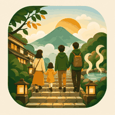

SUMMER TRIP · IKAHO
伊香保 家族旅行
2026.08.15 — 08.16
次の予定現在時刻を確認中
—
予定を読み込み中
PORTAL
必要な情報を分離旅行情報
DAY 1 · TODAY
牧場 → うどん → 宿 → ロープウェイ → 石段8/15（土）
DAY 2 · TOMORROW
遊園地 → 体験 → 帰宅8/16（日）
14:20までにこんにゃくパークで受付・集合。14:30 Cコース開始。

2026.08.15 — 08.16